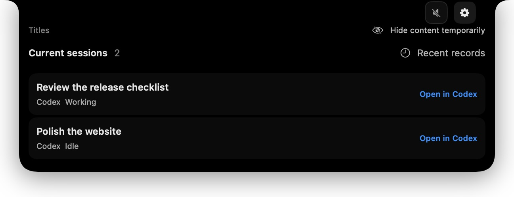
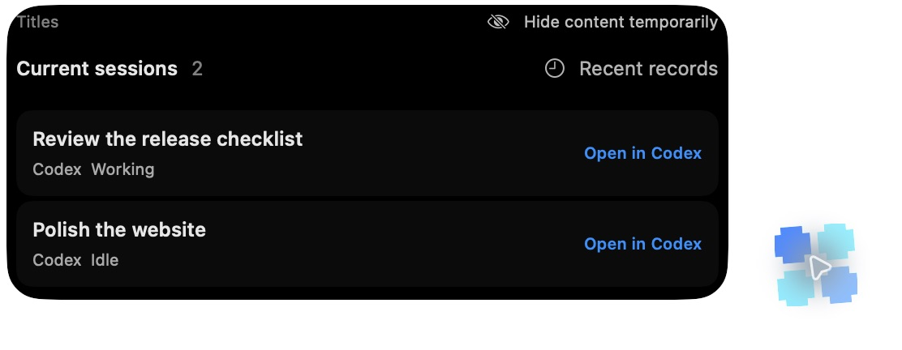
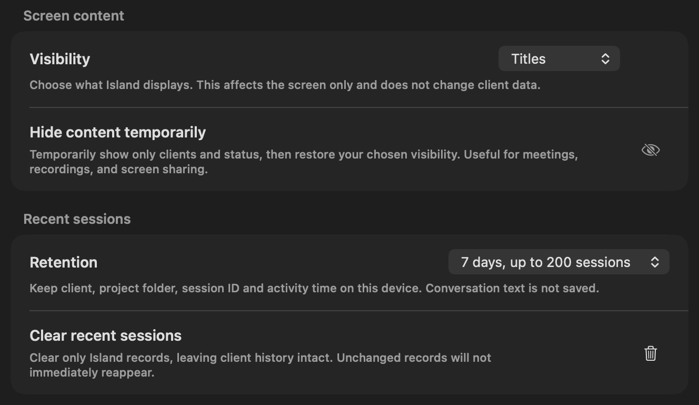

01 / Guide
Less checking between windows.
Current sessions use the client’s native titles where available. Use an explicit open action to return to the client for replies or approvals. Mac Island does not send messages or approve actions for you.
A little space for staying focused
Bring session status from your coding assistants to the top of your Mac. Expand it when you need context, then get back to your work.
Source is available; an official signed installer has not been released. macOS 14+ is the deployment target. Minimum-OS and Intel hardware acceptance remain pending.

Connect the tools you already use
01 / Guide
Current sessions use the client’s native titles where available. Use an explicit open action to return to the client for replies or approvals. Mac Island does not send messages or approve actions for you.
The top-of-screen Island and movable floating Island share the same session and privacy rules. Choose the position that suits your display.

02 / Privacy
Choose status, titles or details. Temporary hiding affects Mac Island only and restores your selected level afterward. It does not cover other apps or stop observation.
Privacy →
03 / Personal Agents
Muse and Grok Bot show one card per currently identifiable Bot context. Experimental sources are off by default and require Accessibility permission and a verified app version. Background Bot discovery and accurate execution state are not guaranteed.
Read the support boundaries →